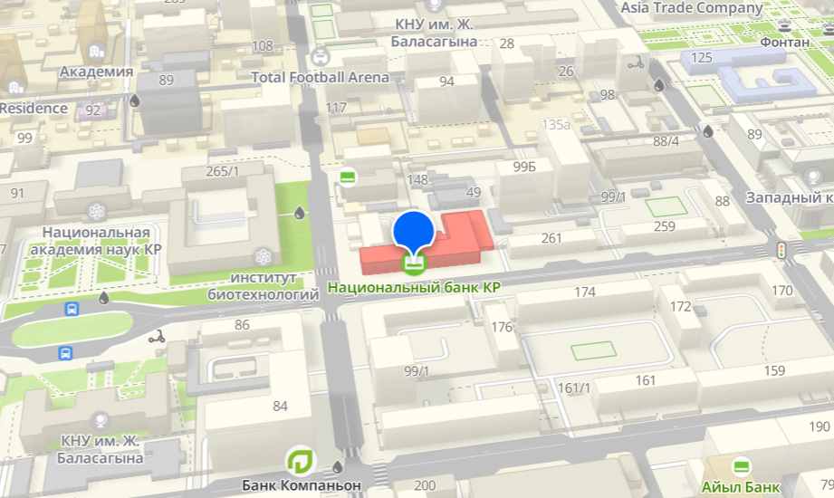
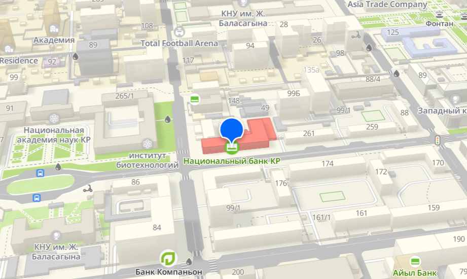

NATIONAL BANK OF
KYRGYZ REPUBLIC
History of the National Bank of the Kyrgyz Republic
The National Bank of the Kyrgyz Republic was established in 1992 after the country gained independence. It became the legal successor of the State Bank of the Kyrgyz Republic, which previously operated as part of the Central Bank of the USSR. In 1993, the national currency — the som — was introduced. Since then, the bank has issued several series of banknotes and coins, playing a key role in stabilizing the country's economy. In 2018, the bank celebrated the 25th anniversary of the national currency and approved the official symbol of the som — the letter “С” with a line below, symbolizing stability.
 

Leninsky district, Umetalieva street,101
Goals, Objectives, and Functions
The status, powers, and operations of the National Bank are defined by the Constitution of the Kyrgyz Republic and the Constitutional Law “On the National Bank of the Kyrgyz Republic” dated June 30, 2022. The main goal of the Bank is to achieve and maintain price stability through the implementation of effective monetary policy. The primary objective is to maintain the purchasing power of the som and ensure the reliability of the country's banking and payment systems. The National Bank operates independently of other government bodies.
Main functions of the National Bank:
- Development and implementation of monetary policy.
- Regulation and supervision of banks and financial-credit institutions.
- Implementation of a unified foreign exchange policy.
- Issuance of the national currency.
- Ensuring the effective operation of the payment system.
- Establishment of rules for banking operations, accounting, and reporting.
Board of the National Bank
The Board of the National Bank consists of seven members: the Chairman, three Deputy Chairmen, and three Board Members. It is a collegial governing body, with members appointed by the President of the Kyrgyz Republic upon nomination by the Chairman of the National Bank for a term of seven years. Current Board members:
- Chairman: Melis Turgunbaev
- Deputy Chairman: Azat Kozubekov
- Deputy Chairman: Mels Attokurov
- Deputy Chairman: Bektur Aliev
- Board Member: Jyldyz Sulaimanbekova
- Board Member: Ulan Jamalidinov
- Board Member: Kanat Temirov